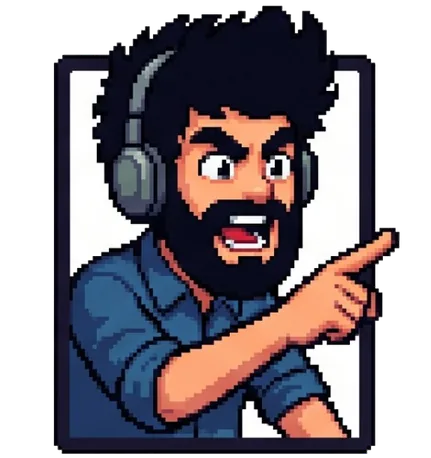

Todavía no tenés ninguna. Las que armes, las de tus clubes y las que abras por link aparecen acá.
Con ayuda de manejo: sigue la trazada y frena solo.
Tabla
Prácticas
Pistas del club
Todavía no hay. Armá una: la ven todos los del club, y dura dos semanas.
Pistas pasadas
El club
El equipo
Cómo se juega
Garaje
Armados de fábrica:
Configuración
Ayuda de manejo
Con ayuda, el auto sigue solo la trazada, frena antes de las curvas y se cruza menos: vos acelerás y corregís. Es más fácil y más lento. En la tabla, esos tiempos llevan el salvavidas.
Rally serio
Para el que sabe, sin ayudas escondidas: frenando, la cola se aliviana y el auto rota; el freno de mano la suelta; el derrape se lleva con acelerador y contravolante. En la tabla, esos tiempos llevan el casco.
Trazada
Una línea pintada en el camino que muestra por dónde pasar. Verde: podés acelerar. Amarilla: venís justo. Roja: hay que frenar. Con la ayuda de manejo viene prendida.
cercalejos
Doblar
menosmás
Inclinalo para probar: el punto amarillo es el volante. Si no se mueve, este aparato no tiene sensor y se dobla con las flechas.
Pedales
Desenfoque y brillos
Sin ellos se ve más simple y anda más liviano.
Sonido
Voz del copiloto

Armá tu pista
Leoingeniero de pista
Para
Publicada, dura dos semanas: se comparte con un link y tiene su tabla. Tu nombre sale en la portada de la pista. Podés tener hasta cinco publicadas a la vez.